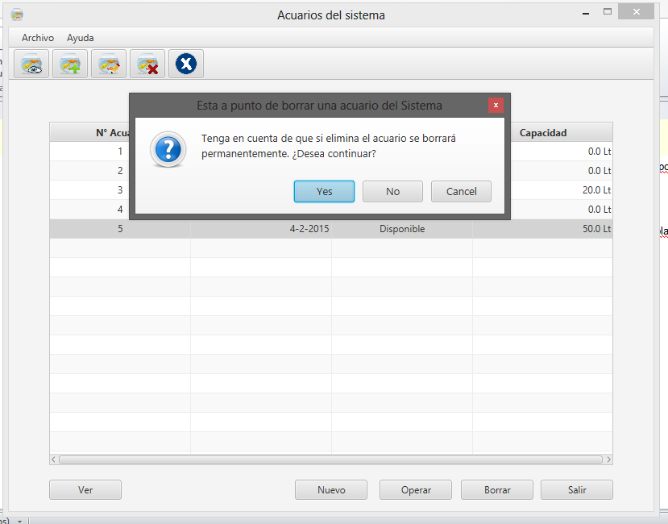
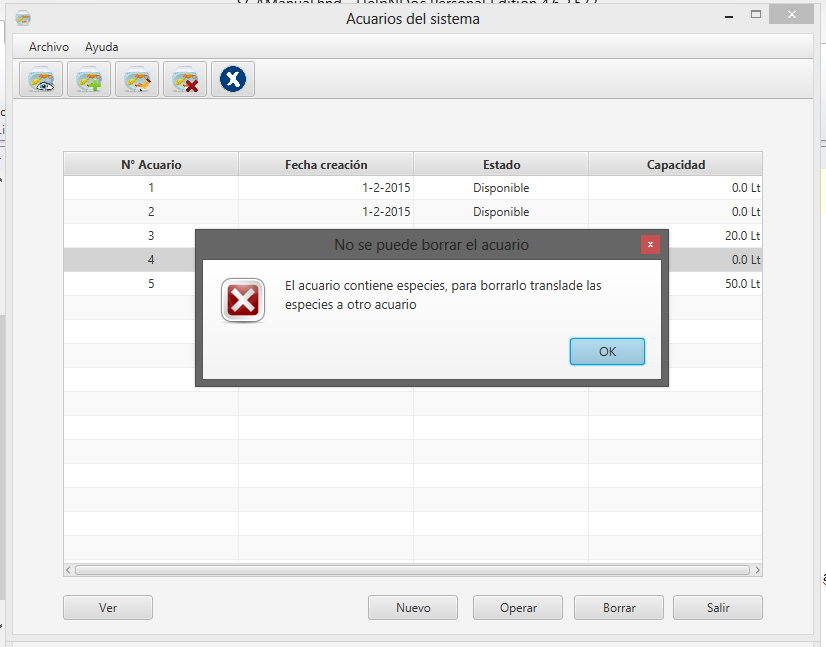

Para eliminar un acuario, deberá seleccionar el acuario que desea eliminar de la lista de acuarios registrados y a continuación la penultima opción de la barra de herramientas en la pantalla principal de ACUARIOS.

Tenga en cuenta que a la hora de borrar un acuario, el mismo no debe contener especies y tampoco tiene que estar involucrado en alguna aplanificación.
Si intenta borrar una especie que este involucrada en lo dicho anteriormente se encontrará con la siguiente pantalla:

Created with the Personal Edition of HelpNDoc: Full-featured Kindle eBooks generator